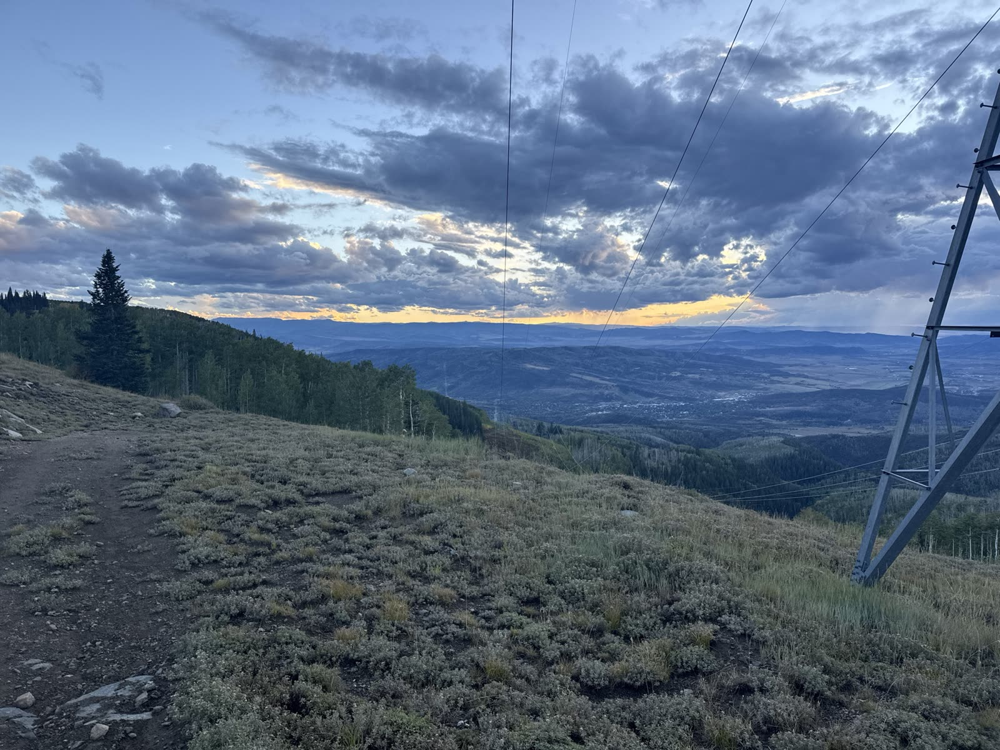
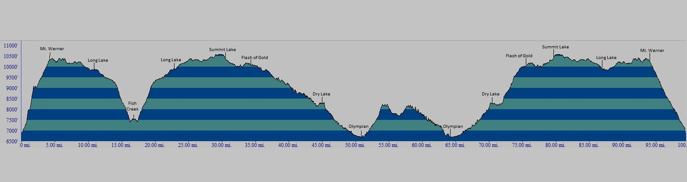

Donate
Bryce’s GoFundMe benefits St. Jude Children’s Research Hospital in Ellis’s honor.
Give on GoFundMeSeptember 18–19, 2026 · Steamboat Springs, CO
Bryce Montano is taking on the Run Rabbit Run 100 for Ellis McDaniel — and every mile points back to St. Jude and the fight against pediatric cancer.
Live from the trail
As of ~7:10 PM MT 37.75 miles complete
Feeling: not terrible
Field check-in on the stretch between Billy’s Rabbit Hole and Dry Lake. Still moving.

Photo from Bryce. Official tracker only updates at aid stations.
Race day
Follow Bryce live on his Aravaipa runner page (aid-station splits). He has 36 hours to finish, starting 9:00 AM Mountain Time today (Friday, Sep 18).
50 & 100 mile races · Steamboat Springs · Fri–Sat Sep 18–19
Overview of Run Rabbit Run around Steamboat Springs and Mount Werner. Pins are approximate aid stations — not official GPS.
Pinch to zoom. Tap a pin for the aid-station name. Gold = last known location.

Race area
…
Loading weather…
Live status
Last update: Loading… Aid station: —
Bryce’s GoFundMe benefits St. Jude Children’s Research Hospital in Ellis’s honor.
Give on GoFundMeSupport Bryce’s efforts with a Running for Ellis tee. Printed to order.
Shop the shirtEllis is a funny, smart boy who cherishes time with his siblings and loves video games. He is currently facing osteosarcoma. To support him, Bryce—a friend and former colleague—is tackling his seventh 100-mile race for Ellis. Along the way, Bryce is asking our network of friends and family to join him in raising funds and awareness for St. Jude.